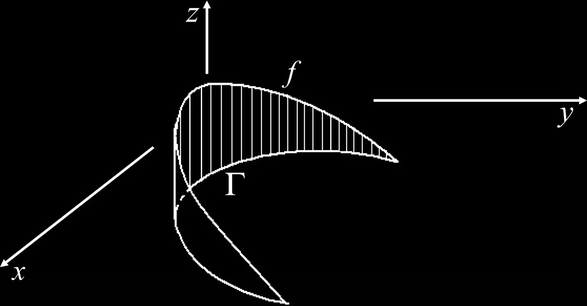

Integrali di linea di prima specie
Definizione 4.5 - Sia r: [a,b] → ℝm una curva regolare di sostegno Γ = r([a,b]), e sia f : A ⊆ ℝm → ℝ una funzione a valori reali definita e continua almeno su un aperto A contenente Γ, ossia Γ ⊆ A. Si dice integrale di linea di prima specie di f lungo Γ, l'integrale:
Interpretazine geometrica
Si può pensare all'integrale curvilineo di prima specie come all'area della porzione di superficie, costituita dalle rette parallele all'asse z e passnti per i punti di Γ, compresa fra il piano xy su cui giace Γ e la superficie di equazione z = f(x,y).
Una volta introdotto l’integrale curvilineo, risulta chiaro che la formula per il calcolo della lunghezza di una curva è solo un suo caso particolare, quando la funzione integranda vale identicamente 1:
Lunghezza(γ) = ∫γ ds
Esempio. Calcoliamo l’integrale ∫Γ f ds dove Γ è la semicirconferenza, sostegno della curva di equazione r(t) = (cost, sin t), t ∈ [π, 2π] ed f (x, y) = −y. Tale integrale rappresenta geometricamente l’area del pezzo di superficie cilindrica S, indicata in Figura 2. Si ha:
Curve equivalenti
La lunghezza dell'arco di curva regolare percorsa da un punto mobile non dipende, naturalmente, dalla velocità con cui il punto si muove, né dal verso di percorrenza. Come si traduce matematicamente questa affermazione?
Sia r = r(t), t ∈ [a,b] un arco di curva regolare. Supponiamo di cambiare parametrizzazione ponendo t = φ(u), con φ: [c,d] ⟶ [a,b], derivabile e invertibile (in particolare quindi, φ sarà monotona, crescente o decrescente). La nuova curva r = r(φ(u)), u: [c,d] avrà lo stesso sostegno, anche se sarà percorsa con una velocità diversa. Inoltre, a seconda che φ sia crescente o decrescente, la nuova curva sarà percorsa nello stesso verso o in verso opposto, rispetto alla curva originaria.
Se φ è crescente, le due parametrizzazioni si diranno equivalenti, altrimenti, la seconda si dità cambio di orientazione rispetto alla prima.
Esempio.
x = R cos t , y = sin t t ∈ [0.2]
e
x = R cos (2u) y = sin (2u) u ∈ [0, π]
sono due parametrizzazioni equivalenti di una circonferenza. Invece
x = R cos (−u) y = sin (−u) u ∈ [0, 2π]
rappresenta un cambio di orientazione. ■
Possiamo ora enunciare un risultato preciso riguardo la lunghezza di una curva.
Proposizione 1.3.1. La lunghezza di una curva, e più in generale, l'integrale di linea di f di prima specie lungo Γ, è invariante per parametrizzazioni equivalenti, ed anche per cambiamento di orientazione su Γ.
Dim. É una semplice applicazione della formula di cambio di variabile nell'integrale e del teorema di derivazione delle funzioni composte. □
Intepretazione fisica
Supponiamo di avere un filo in ℝ3 di densità variabile ρ, cioè ρ è una funzione di tre variabili che al punto (x, y, z) associa la densità (che potrebbe non essere omogenea) del filo. Per semplicità possiamo definire ρ : ℝ3 → ℝ dicendo che ρ(x, y, z) = 0 se il punto (x, y, z) non appartiene al filo. Parametrizzando il filo con una curva r : [a, b] → ℝ3 possiamo esprimere la massa del filo come
m := ∫Γ ρ ds
Si osservi che se la massa del filo è costante (sul filo), cioè se il filo è omogeneo, questo integrale curvilineo altro non è che la lunghezza della curva, cioè del filo, moltiplicato per ρ che sarà la costante che descrive la densità di massa.
Le coordinate (x̄, ȳ, z̄) del baricentro sono allora date da
Se il corpo è omogeneo (ρ = costante) il baricentro si dice centroide, e ha coordinate: